I design and develop learning programs that work — from course architecture through delivery, assessment, and iteration. A decade of building L&D infrastructure from scratch across healthcare education, faculty development, and AI integration.
I pay close attention to the difference between productive effort and avoidable friction. Good learning often requires challenge, repetition, uncertainty, and real cognitive work. I do not try to remove that.
What I try to remove is the friction that does not help. Unclear instructions, weak course structure, scattered information, clumsy workflows, and poorly designed handoffs can drain time and energy without improving learning or performance.
This idea shapes how I design courses, support faculty, structure training, and build systems. The goal is to make room for the effort that matters.
I do not assume that every problem needs a technical answer. Some problems are structural. Some are instructional. Some come from policy, culture, or coordination gaps. The tool only helps once the real problem is clear.
That usually means slowing down at the beginning, asking what is actually breaking down, and choosing a response that fits the situation rather than forcing a preferred solution.
I prefer systems that keep helping after the first implementation. That can mean reusable templates, clearer logic, better documentation, stronger training, or workflows that other people can actually sustain.
The goal is not only to solve the immediate problem. It is to leave the organization better able to handle similar problems the next time.
Founded three innovation centers from the ground up: an AI Lab, a Center for Learning Analytics, and a Center for Teaching and Learning Excellence. Nobody asked me to build any of them. I saw what was needed and made it happen.
Most of my course development work starts with a real operational need: a required course students aren't engaging with, an SME whose knowledge is locked in lecture slides, a training sequence that doesn't scale. I work from problem to design to deployment — coordinating SMEs, managing production, and building LMS infrastructure that runs reliably after launch.
A required Western Medicine course structured as synchronous lecture sessions — students questioned its value, attendance was inconsistent, and the format didn't support flexible scheduling. I led the full redesign and conversion to a fully asynchronous format.
Collaborated with faculty SME to restructure lecture content into 10–20 min chunked video segments. Coordinated recording, video editing, branding, and LMS build. Designed case-based learning activities for each unit: patient scenario discussions, lab interpretation exercises, spirometry practice. Built Kirkpatrick-aligned assessments and embedded AI-assisted discussion prompts throughout. Added a course support chatbot for async Q&A. Structured RSI compliance into the course architecture. Launched Spring 2025 — positive reception and adopted as the blueprint for future async conversions.
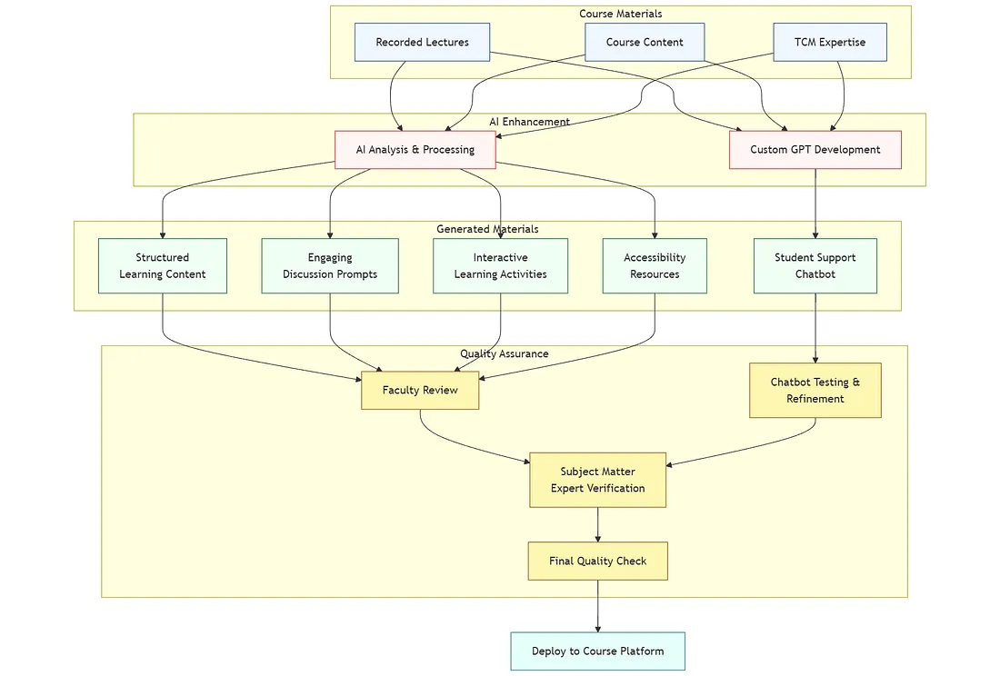
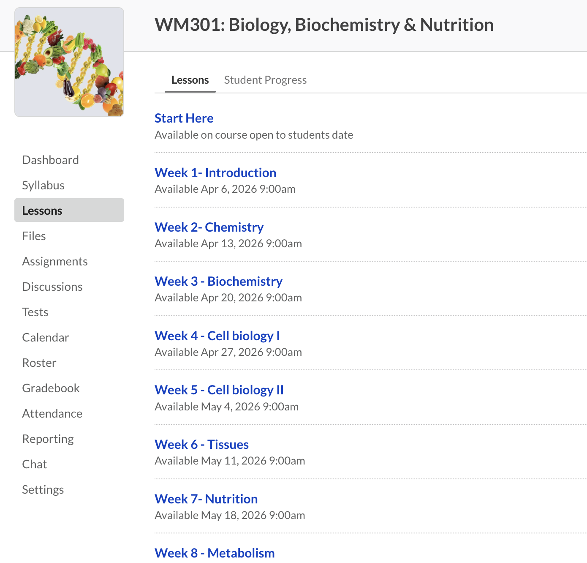
A 10-week course covering diagnostic testing across imaging, cardiovascular, pulmonary, and lab interpretation — currently being converted to fully asynchronous delivery using the WM301 workflow as the production blueprint.
Working with course faculty (SME) who records weekly lecture segments. I coordinate editing, LMS page structure, activity design, and assessment sequencing. Each week follows a consistent architecture: introduction page with learning objectives, video lecture, case-based activity, and assessment checkpoint. Topics include X-ray/CT/MRI decision-making, ECG interpretation, lab value analysis, and spirometry practice. Currently completing weeks 1–4; midterm and final exam design in parallel.
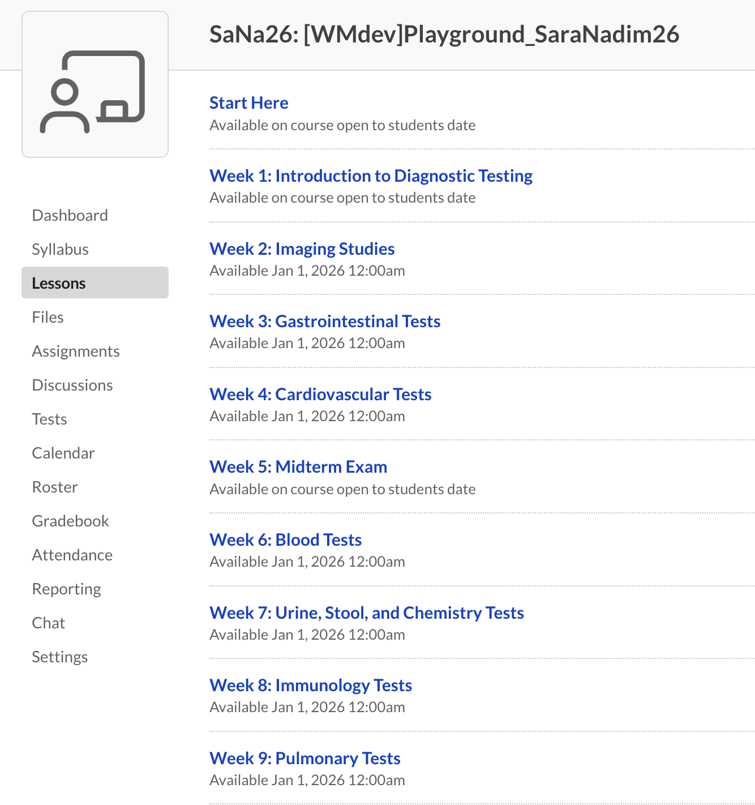
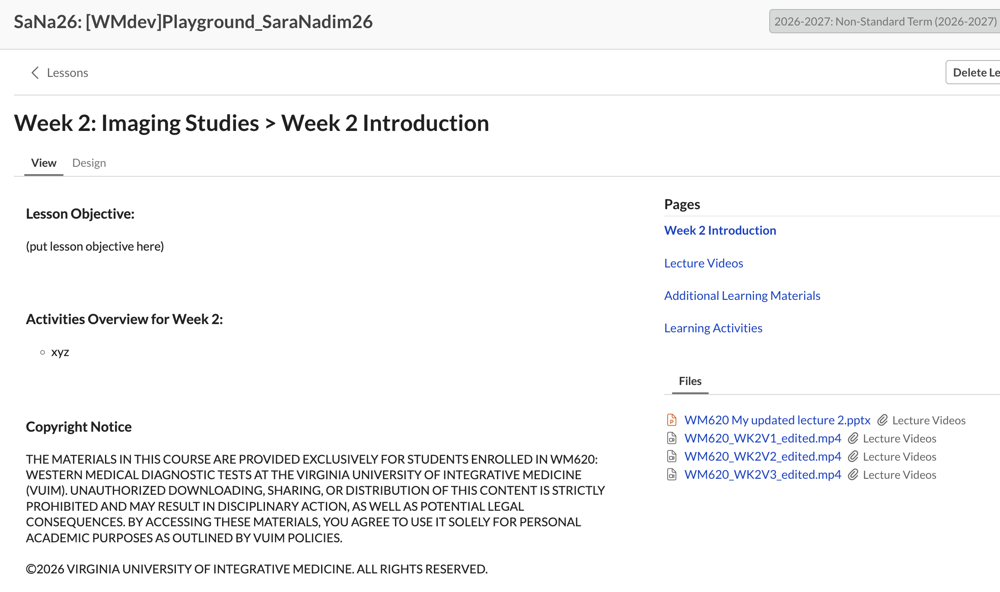
A short-form, stackable credential for faculty and staff demonstrating practical AI competency — not passive awareness, but demonstrated workflow integration. Designed with performance-based assessment at every tier.
Three competency levels: AI-Curious (understands what AI can and cannot do), AI-Practitioner (uses AI tools in actual workflow, can show results), AI-Champion (can train others, has redesigned workflow around AI). Prerequisite onboarding built in Articulate Rise as a self-paced 30-minute module integrating Tabs, Sorting Activity, Process blocks, and embedded case study. Assessment is portfolio-based: participants demonstrate what they built, not what they read. Pilot cohort planned through CTLE.
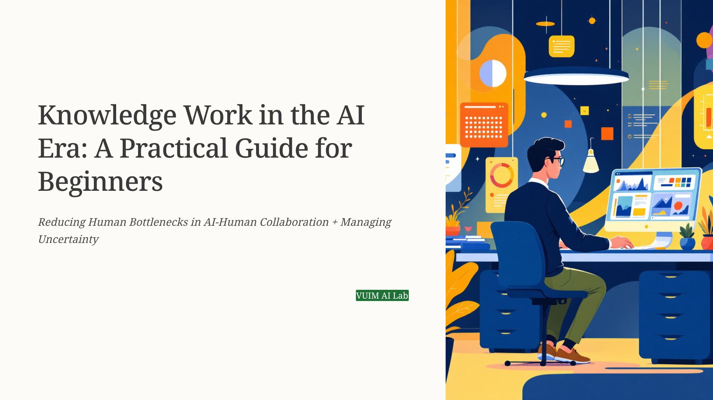
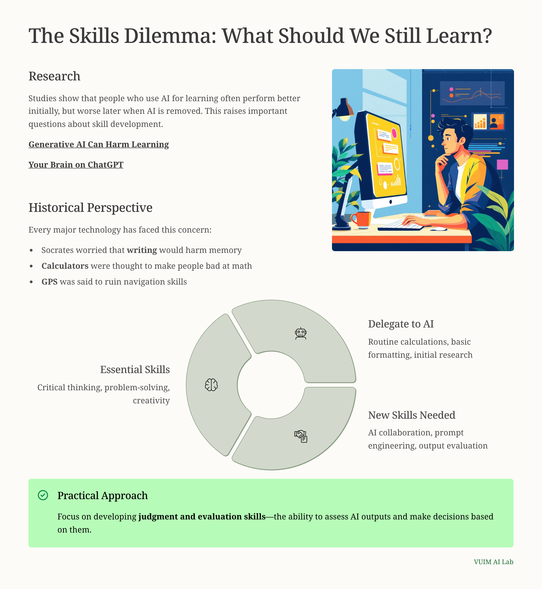
OLR101 (Online Learning Readiness), FAC001 (Faculty Essentials), BEW101 (Board Exam Prep), AI101 (AI Literacy), AIP101 (Academic Integrity).
Complete asynchronous programs for onboarding and continuing education. Built and maintained in Canvas LMS across three campuses. Includes an extensive tutorial library for platform navigation and workflow support.
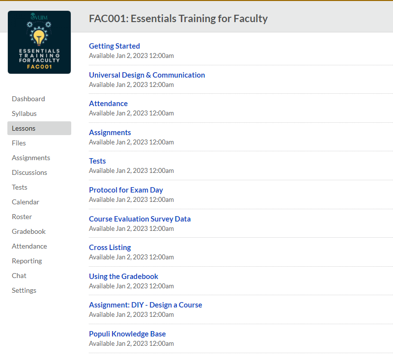
Founded and led CTLE. Faculty training in LMS proficiency, AI literacy, and pedagogy. Comprehensive evaluation system with self-evaluation, peer review, and professional action plans.
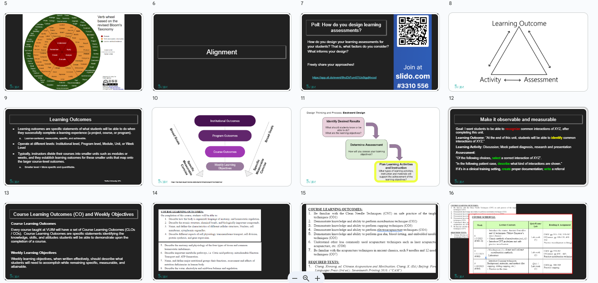
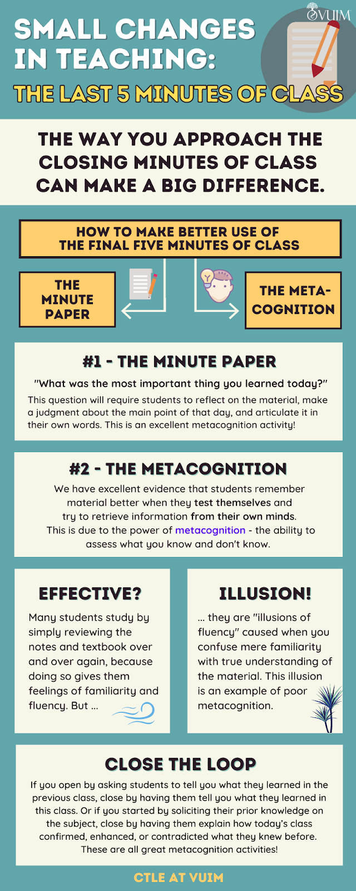
Direct management and development across multiple campuses. Structured mentorship programs, grade distribution analytics, and digital resource library with version control.
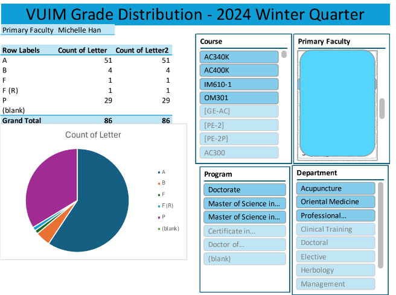
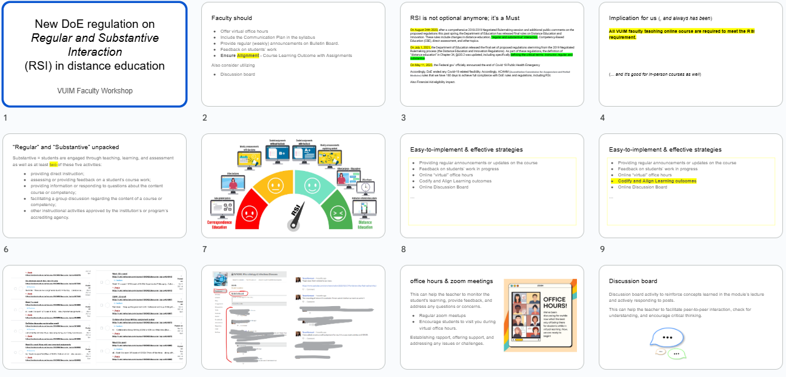
Monthly newsletters with research-based teaching strategies. Infographics on metacognition, classroom techniques, and evidence-based pedagogy. RSI workshop series.
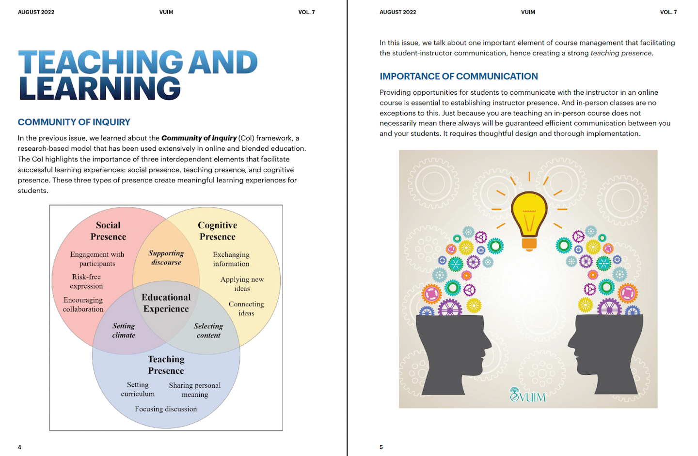
Sharps container protocols, safe needle handling, and frameworks for diverse integrative medicine modalities. Collaborated with VUIM clinical directors (SMEs) to translate existing safety protocols into branching scenarios and scenario-based assessment. Reduced incidents from quarterly occurrences to zero. More than 110 employees and 300+ interns complete safety training each quarter. The Storyline 360 scenario-based module — branching decisions, card-flip interactions, variables — is the next-iteration design for VCR001, deployed on SCORM Cloud while LMS infrastructure is evaluated.
View Storyline Module →Systematic preparation for intern rotations at INOVA and Memorial Sloan Kettering. Compliance education, credentialing workflows, and just-in-time learning resources so interns are ready before their first day — not learning procedures on the floor.
Built from scratch to support clinical operations and educational outcomes. AI-enhanced processing of records, treatment patterns, and patient outcomes. Reduced clinical reporting time by 95%.
AI-powered virtual patient intake simulator for clinical practice. Scenario-based competency assessments. PACE survey for proficiency assessment of clinical excellence. Herb lab digital packet system aligned with board exam requirements.
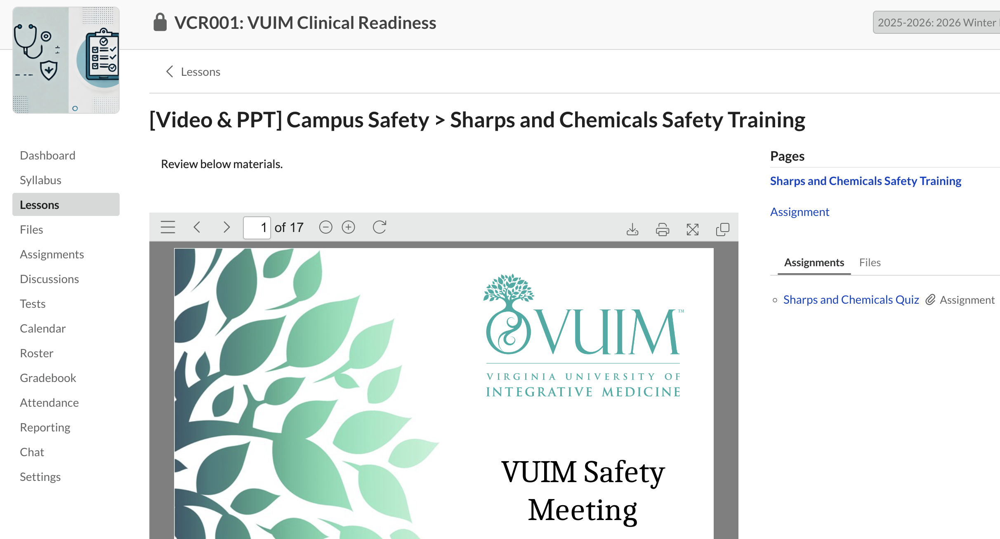
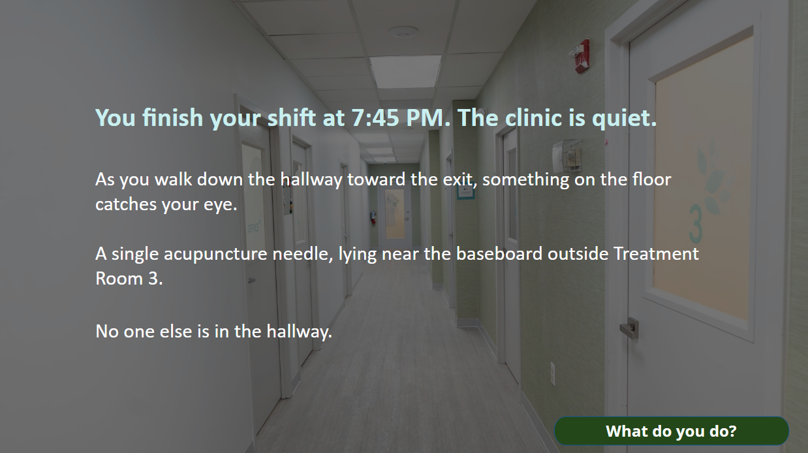
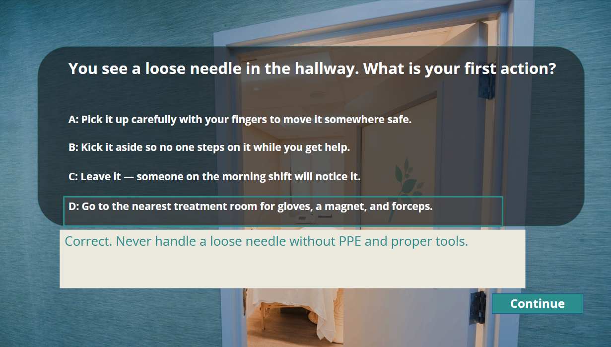

When AI tools became ubiquitous, our institution had the same gap most did: students were already using these tools, but there was no policy, no guidance, and no structured way to build actual competency. I approached it as a design problem with three layers: institutional policy, faculty readiness, and student skill.
Designed a 10-week blended course built around a structured AI literacy framework. Students don't learn to use AI passively. They learn to question it, stress-test it, and decide when not to use it.
6 synchronous Zoom sessions + 4 async weeks. Pre/post surveys aligned to Kirkpatrick Levels 1–3. Key activities: red team testing (deliberately breaking AI), custom assistant builds, personal ethics frameworks.

Founded VUIM's first AI Lab: a monthly peer learning community for faculty and staff, built on psychological safety and voluntary participation. Members share use cases, test tools together, and build practical fluency in a low-stakes environment.
Developed institutional AI policy, literacy framework, and AI-enhanced learning tools including intake simulators and competency-aligned feedback systems.
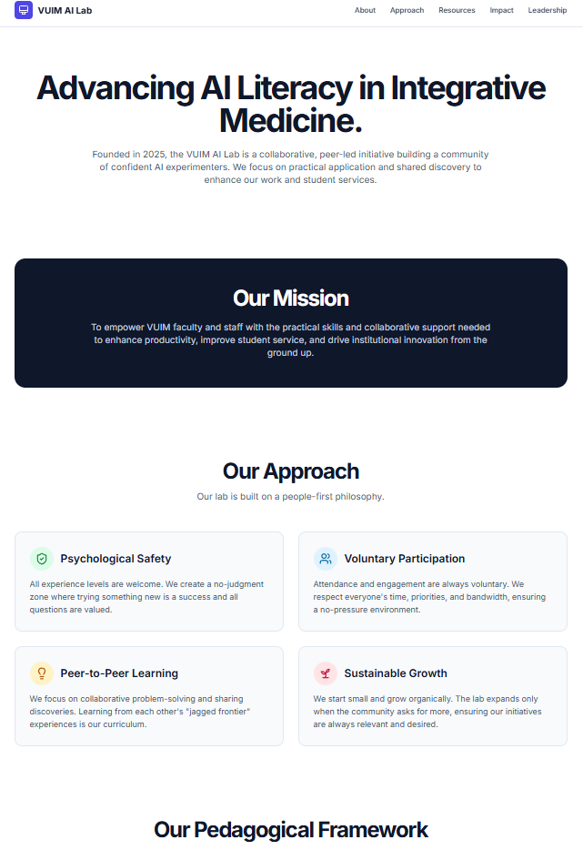
Quality course development is resource-intensive. I built a workflow using local Whisper transcription, AI-assisted scripting, and structured prompting to accelerate async course production while keeping SME input and learning objectives intact.
Local Whisper pipeline converts clinical lecture audio into structured knowledge assets entirely on-premises — cost zero, data stays in-house. This is the backbone of the WM301 and WM620 development workflows.
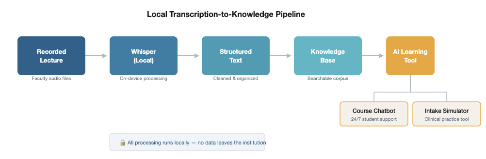
Competency alignment is critical. I built with Claude Code to support accreditation and competency alignment work. An interactive React app with two views: a D3.js competency sunburst and a Cytoscape.js prerequisite flow graph.
Clicking any course node shows its mapped competencies, prerequisites, and course-level outcomes. Built on top of a 257-record normalized JSON database linking ACAHM competency domains to program outcomes across four degree programs. Used by the Curriculum Committee for gap analysis and accreditation review.
View Interactive App →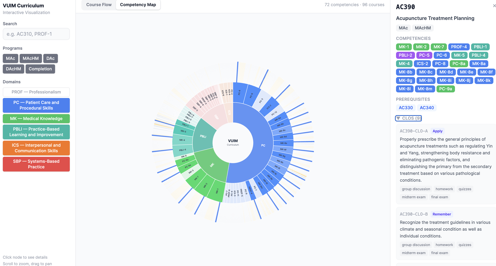
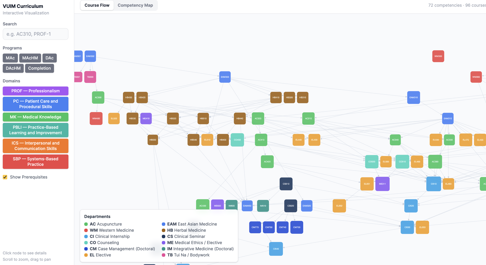
Led the Education Resources subcommittee for the national acupuncture certification body, shaping AI competency standards for 35,000+ credentialed professionals.
Questions about learning outcomes exist at every level. How many patients are our interns seeing per term? What do board exam trends look like over time? I established the CLA from scratch to answer all of them. What used to take weeks now takes hours.

I handle the data infrastructure behind NC-SARA reporting, longitudinal board exam tracking across multiple accreditation bodies, and the analytics that inform institutional strategy and program-level decisions.

Monthly clinic data reports: appointments, demographics, ICD coding, financial metrics. Faculty performance analytics with peer review tracking. Student success metrics integrating evaluations, outcomes, and career progression.
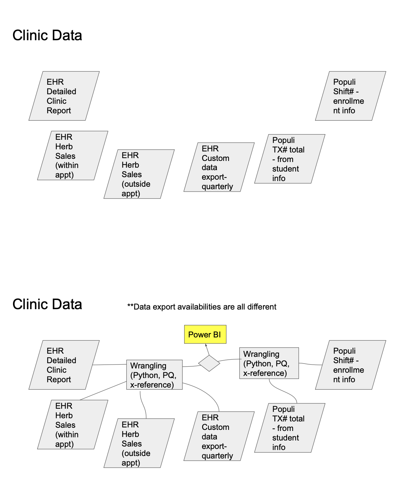
Quarterly oversight across three campuses (VA, NJ, GA). Multi-degree pathways: MAc, MAcHM, DAc, DAcHM.
Five accreditation bodies: NC-SARA, ACAHM, and three state certifications. 100% compliance maintained. Institutional assessment framework built from scratch.
Fully asynchronous Western Medicine courses. Hybrid Clinical Medicine courses. Competency-based challenge exams with AI-assisted grading and human review. Online doctoral program launched from zero to 60+ students per term.
AI integration policies, academic integrity frameworks, quality assurance protocols. SARA C-RAC compliance system development.
ADDIE, SAM, UDL, LXD, Backward Design, Blended & Async Learning Design, Video Production, SME Collaboration, Case-Based & Scenario-Based Design, Kirkpatrick Evaluation, Articulate Storyline, Articulate Rise, Camtasia, Canvas LMS, Populi
Faculty Coaching & Observation, Leadership Development, Onboarding Program Design, Peer Learning Communities, Workshop Facilitation, Performance Analytics, Training Needs Analysis, Change Management
AI-Enhanced Course Development, Claude API, ChatGPT, Gemini, Make.com Automation, Whisper (local transcription), Python, Power BI, Data Architecture, AI Ethics & Governance, Prompt Engineering, Strategic AI Adoption
I see the gap, I ask what's actually causing it, and I build what's needed. With the right tools when tools are the answer. Everything I design is oriented toward people walking away more capable because of it.